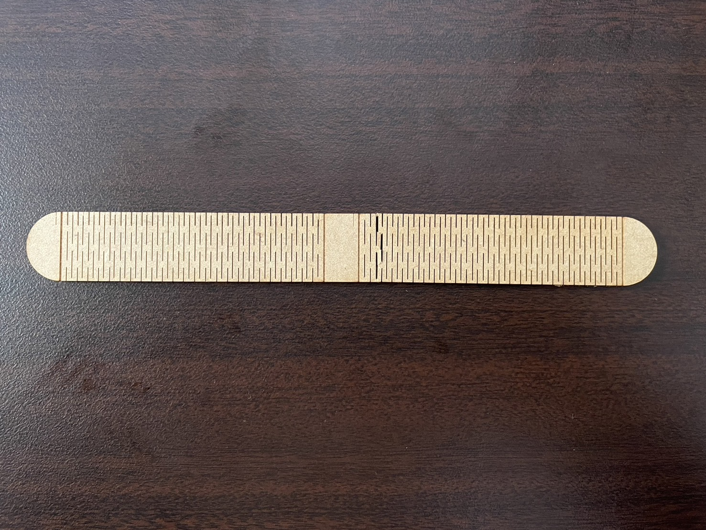

第２回 レーザー加工
作成したもの
腕に巻けるバンドを作りました。
私の大好きなアーティストの方はライブでペンライトではなく腕に巻くライトを使います。
それに合ったバンドを作ってライブに行けたらいいなと思い作成しました。
制作過程
１．fusion360での設計
まずは腕に巻くことを考えて設計しました。
細かい線を引くときは、この画像を使用しました。
作成の際に参考にしたものはこちらです。
Living Hinges with Fusion 360
２．実際に作成したもの
ver 1

曲がる部分が多すぎて、良く曲がりますが真ん中で割れてしまいました。
次に設計したものは、割れてしまうのを防ぐために曲がる部分を少し減らし、強度の向上を図ってみました。
ver 2
まとめ・感想
初めてレーザー加工をしてみましたが、個人的には3Dプリントよりも難しいなと感じました。
友達、ファブラボの方にアドバイスを受けなければ絶対に完成してなかったと思います。本当に感謝です。
いくら曲がる加工をしたとしても、やはり耐久面には限界があるので、「このデザインで加工したら壊れるかな？」といったことに注意しなければならず、 設計でのさじ加減が難しかったです。
今回のdxfファイル